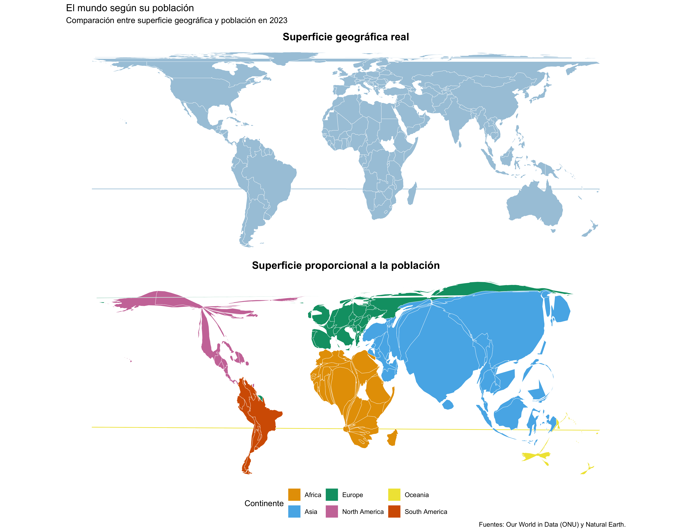

Tres técnicas de visualización de datos.
El mundo según su población (2023).

Comparación de las características de las flores Iris.
Abrir visualización interactivaProgreso de las energías renovables en la UE.
Visualización de Tableau pendiente de incorporar.